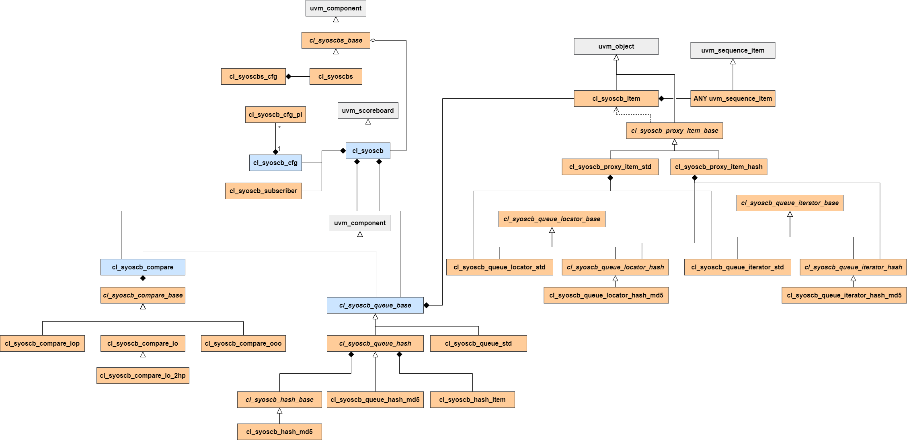

This chapter contains some background information on the architecture of the scoreboard.
General structure
Each scoreboard (cl_syoscb) consists of a number of queues (see Queue implementation notes). A scoreboard should have as many queues as there are models being tested. If e.g. the testbench compares a DUT to a single reference model, two queues, "DUT" and "REF" should be instantiated. Each queue is associated with a number of producers. If e.g. the inputs and outputs of the DUT/REF are being sampled, these producers may be named "IN" and "OUT".
The scoreboard operates by using TLM connections or the function-based API to receive data sampled by a UVM monitor or a VC. The scoreboard has a subscriber for each producer on each queue. When a sequence item is written to a subscriber, the sequence item is wrapped in a cl_syoscb_item before it is added to the correct queue. The cl_syoscb_item is a wrapper item which includes some metadata such as which producer generated the item.
The queues in the scoreboard store sequence items until at least one sequence item is present in each queue. When this condition is met, a comparison is started, based on the chosen compare algorithm (see Compare implementation notes). Every time an item is inserted during simulation, the scoreboard checks if all queues contain an item, and starts a comparison if this is the case. It does so throughout the entire simulation. If any errors occur, the scoreboard will generate a UVM_ERROR. See Debugging features for more information on the debugging features that the scoreboard includes.
Note that when using the SyoSil UVM Scoreboard, the reference model and scoreboard are completely separated, which is not the case in many other UVM scoreboards. By separating scoreboard and reference model, we achieve separation of concerns, making both the reference model and scoreboard simpler to use and instantiate in other testbenches.
Class diagram
A UML class diagram of the SyoSCB is shown below. The PDF version of the manual also includes a PDF diagram, which allows you to zoom in further than the PNG file used in the HTML version of the manual.

Classes highlighted with blue make up the core 4 aspects of the scoreboard: configuration, queues, compare strategy and the scoreboard itself. Classes with italicized names are abstract base classes that should not be implemented. Grey classes are from the UVM class hierarchy, and have been included for visualization purposes only. They are not included in the scoreboard's source code.
General error handling
Whenever a method detects an error, two error handling concepts are used:
Getter methods and other methods with a return value will generally issue a UVM_INFO message at verbosity level UVM_DEBUG with some information about what went wrong, returning 1'b0 or null to signal an error. It is up to the calling method to respond to and handle the error, or escalate it to a UVM_ERROR / UVM_FATAL.
Setter methods and other methods without a return value will issue a UVM_ERROR or UVM_FATAL, as they have no other way of signalling errors. Again, it is the responsibility of the caller to potentially catch and handle these errors.
Error categories
There are several categories of errors used throughout the scoreboard. The following table lists some of them along with a possible cause for the error.
| Error Category | Description |
| IMPL_ERROR | Implementation error. Something is really broken |
| QUEUE_ERROR | A queue related error, e.g. the queue could not be found |
| CFG_ERROR | Configuration error. Usually because the configuration object is missing |
| TYPE_ERROR | Type error. Typically issued when $cast() fails |
| COMPARE_ERROR | Compare error. Issued, e.g. when the in order compare fails |
| SUBSCRIBER_ERROR | Subscriber error. Issued, e.g. when the call to cl_syoscb::get_subscriber() fails |
| ITERATOR_ERROR | Iterator error. Issued when an iterator cannot be found in cl_syoscb_queue_hash |
Multiple queue references
Both the top level scoreboard class cl_syoscb and the configuration class cl_syoscb_cfg contain handles to all queues. The former uses an ordinary array which provides a fast way of looping over the queues and the latter an associative which makes it easy to find a queue using only its name. Using either reference is OK, use the approach best suited for a given operation.
Valid queue/compare type combinations
In the table below, an overview of all queue and compare type combinations is shown, as well as their possible limitations. See Queue implementation notes and Compare implementation notes for additional information on queue topologies and comparison strategies.